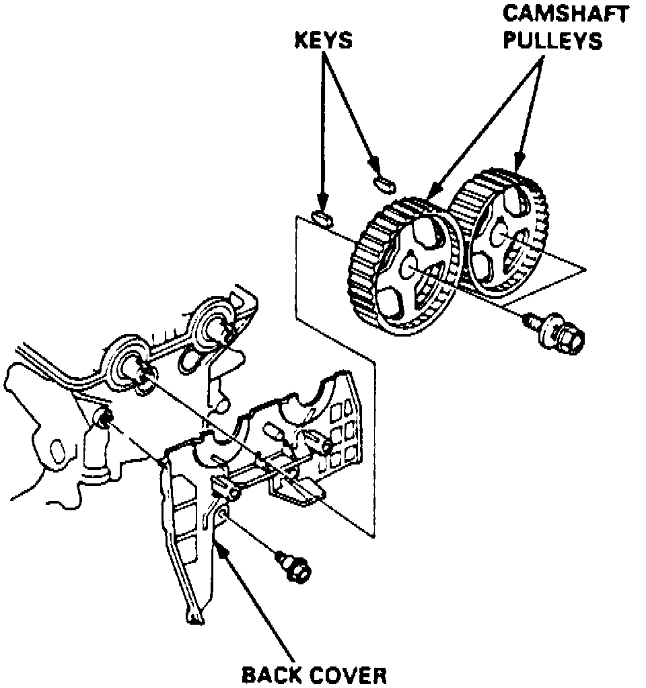
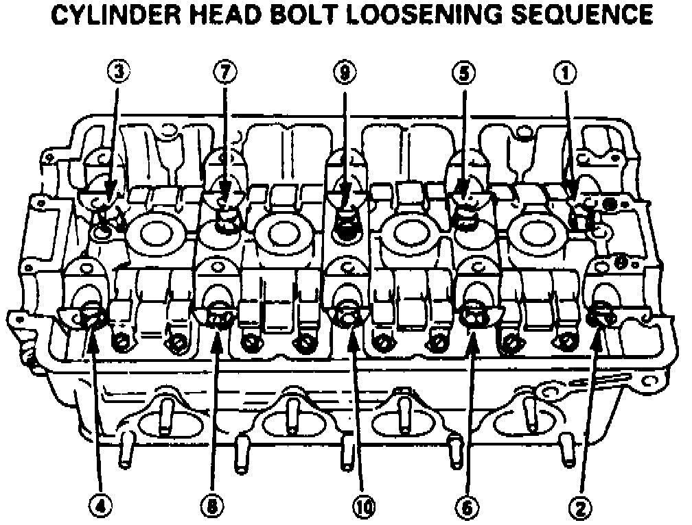
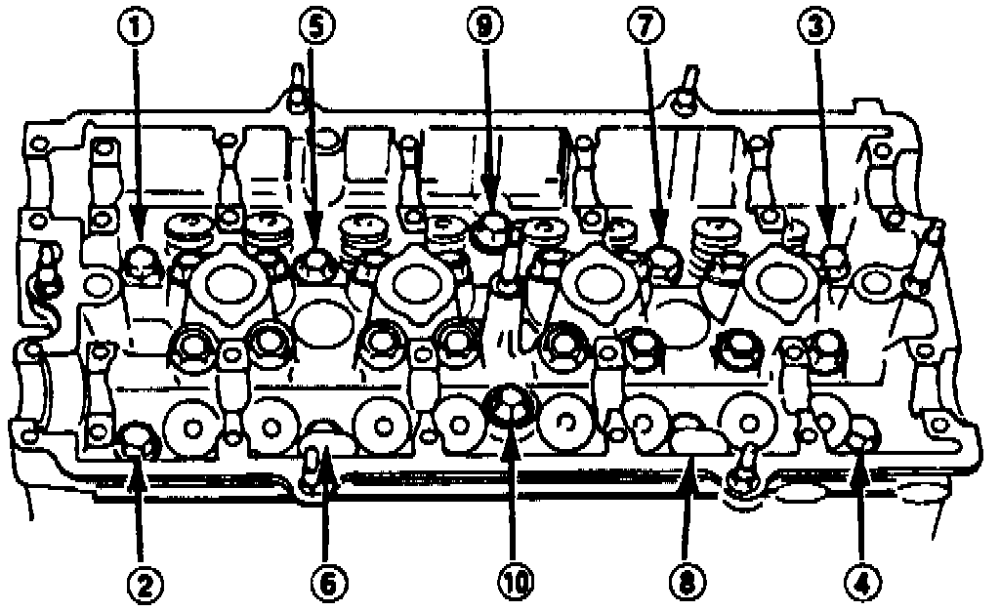
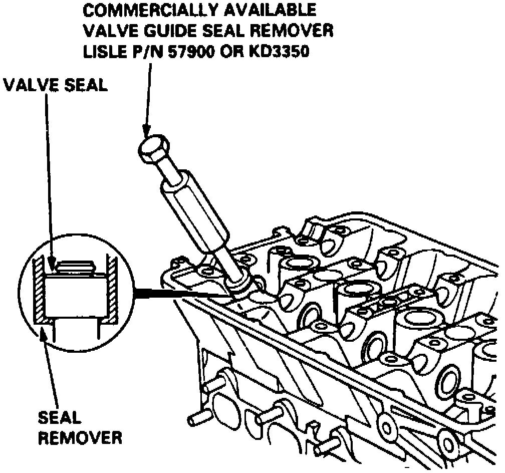
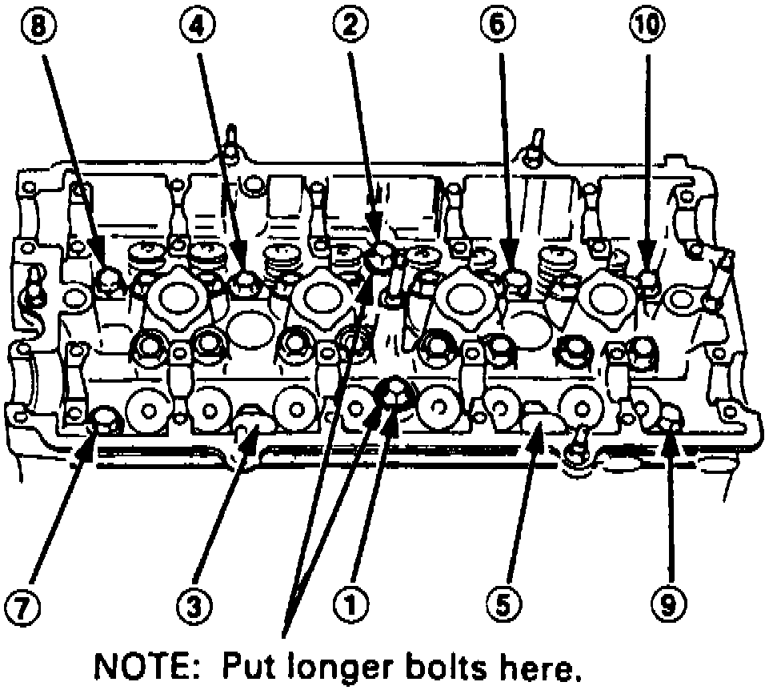

Cylinder Head Assembly: Service and Repair
NOTE: Do not remove cylinder head until engine temperature is below 100°F.1. On models equipped with radio coded theft protection system, refer to Vehicle Damage Warnings for system disarming and arming procedures. On models equipped with airbag system, refer to Technician Safety Information for system disarming and arming procedures.
2. Rotate crankshaft pulley to position No. 1 piston at TDC.
3. Disconnect battery ground cable and drain engine coolant, then relieve fuel system pressure as described under Technician Safety Information.
4. Disconnect fuel feed hose, then remove intake air duct, breather hose, water bypass hose and evaporative emission (EVAP) control canister hose.
5. Remove fuel return, Positive Crankcase Ventilation (PCV), brake booster vacuum and water bypass and vacuum hoses, then remove throttle cable.
6. On models with automatic transaxle, remove throttle control cable. Ensure cable is not bent during removal.
7. Disconnect connectors for the following components:
a. Fuel injectors.
b. Intake Air Temperature (IAT), Engine Coolant Temperature (ECT), Top Dead Center (TDC), Manifold Absolute Pressure (MAP) and Throttle Position (TP) sensors.
c. Ignition coil.
d. ECT gauge sending unit.
e. Idle Air Control (IAC) and Intake Air Bypass (IAB) control solenoid valves.
f. VTEC solenoid valve and pressure switch.
8. Remove distributor and spark plug caps from cylinder head as described under Distributor, Replace, then remove upper radiator hose, heater hose and water bypass hose.
9. Remove splash shield, engine ground cable and power steering pump mounting and adjusting bolts. Do not disconnect power steering hoses.
10. Remove power steering pump belt and position pump aside, then remove A/C compressor and alternator belts.
11. Remove cruise control actuator and side engine mount, then remove cylinder head cover and timing belt as described under Timing Belt.
Fig. 42 Camshaft Pulleys, Locator Keys & Rear Cover:

12. Remove camshaft pulleys and rear cover, Fig. 42, then the exhaust and intake manifolds. Refer to Exhaust Manifold and Intake Manifold for procedures.
13. Loosen locknuts and adjusting screws, then remove camshaft holder bolts, holders, camshafts and rocker arms.
Fig. 43 Cylinder Head Bolt Loosening Sequence:

Fig. 44 Cylinder Head Bolt Loosening Sequence:

14. Loosen cylinder head bolts in sequence, Fig. 43 and 44. Loosen bolts only 1/3 turn at a time to prevent warpage of head.
15. Lift cylinder head from vehicle.
Fig. 45 Valve Guide Seal Removal:

16. If valve springs or seals require replacement, proceed as follows:
a. Using suitable socket and plastic mallet, tap valve retainer to loosen valve keepers.
b. Install valve spring compressor tool No. 07757-PJ1010A, or equivalent, then compress spring and remove valve keeper.
c. Install suitable valve guide seal remover, Fig. 45.
d. Remove valve seal.
Fig. 46 Cylinder Head Bolt Tightening Sequence:

17. Reverse procedure to install, noting the following:
a. Ensure cylinder head and block mating surfaces are clean and UP marks on timing belt pulleys are at top.
b. If valve springs or seals were replaced, lubricate valve stems prior to spring installation and position valve springs with painted portion or closely wound coils toward cylinder head. With springs installed, lightly tap end of each valve stem several times to seat valves and keepers.
c. Install a new head gasket, ensuring alignment between cylinder head dowel pins and oil control orifice.
d. Using sequence shown in Fig. 46 Torque bolts in two steps; first step to 22 ft. lbs, second step to 61 ft. lbs.
e. Apply engine oil to cylinder head bolts and washers.
18. On models equipped with radio coded theft protection system, refer to Vehicle Damage Warnings for system disarming and arming procedures. On models equipped with airbag system, refer to Technician Safety Information for system disarming and arming procedures.